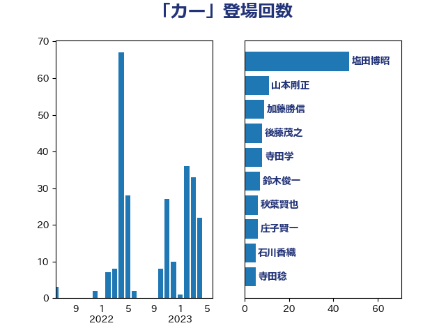

単語「カー」

| 塩田博昭 | 公明党 | 47 回 |
| 山本剛正 | 日本維新の会 | 11 回 |
| 加藤勝信 | 自由民主党 | 9 回 |
| 後藤茂之 | 自由民主党 | 8 回 |
| 寺田学 | 立憲民主党 | 8 回 |
| 鈴木俊一 | 自由民主党 | 7 回 |
| 秋葉賢也 | 自由民主党 | 6 回 |
| 庄子賢一 | 公明党 | 6 回 |
| 石川香織 | 立憲民主党 | 5 回 |
| 寺田稔 | 自由民主党 | 5 回 |
| 西村康稔 | 自由民主党 | 4 回 |
| 渡辺創 | 立憲民主党 | 4 回 |
| 鈴木敦 | 国民民主党 | 3 回 |
| 野村哲郎 | 自由民主党 | 3 回 |
| 舩後靖彦 | れいわ新選組 | 3 回 |
| 石井拓 | 自由民主党 | 3 回 |
| 木原誠二 | 自由民主党 | 3 回 |
| 斎藤アレックス | 国民民主党 | 3 回 |
| 平山佐知子 | 無所属 | 3 回 |
| 大塚耕平 | 国民民主党 | 3 回 |
| おおつき紅葉 | 立憲民主党 | 3 回 |
| 鈴木庸介 | 立憲民主党 | 2 回 |
| 萩生田光一 | 自由民主党 | 2 回 |
| 礒崎哲史 | 国民民主党 | 2 回 |
| 源馬謙太郎 | 立憲民主党 | 2 回 |
| 斉藤鉄夫 | 公明党 | 2 回 |
| 山口壯 | 自由民主党 | 2 回 |
| 小島敏文 | 自由民主党 | 2 回 |
| 奥野総一郎 | 立憲民主党 | 2 回 |
| 馬場伸幸 | 日本維新の会 | 1 回 |
| 阿部司 | 日本維新の会 | 1 回 |
| 長峯誠 | 自由民主党 | 1 回 |
| 長妻昭 | 立憲民主党 | 1 回 |
| 鎌田さゆり | 立憲民主党 | 1 回 |
| 重徳和彦 | 立憲民主党 | 1 回 |
| 道下大樹 | 立憲民主党 | 1 回 |
| 西村明宏 | 自由民主党 | 1 回 |
| 西岡秀子 | 国民民主党 | 1 回 |
| 若松謙維 | 公明党 | 1 回 |
| 神谷宗幣 | 参政党 | 1 回 |
| 神田潤一 | 自由民主党 | 1 回 |
| 田中健 | 国民民主党 | 1 回 |
| 清水貴之 | 日本維新の会 | 1 回 |
| 浜口誠 | 国民民主党 | 1 回 |
| 浅野哲 | 国民民主党 | 1 回 |
| 浅田均 | 日本維新の会 | 1 回 |
| 横沢高徳 | 立憲民主党 | 1 回 |
| 榛葉賀津也 | 国民民主党 | 1 回 |
| 梅村みずほ | 日本維新の会 | 1 回 |
| 松本剛明 | 自由民主党 | 1 回 |
| 杉本和巳 | 日本維新の会 | 1 回 |
| 日下正喜 | 公明党 | 1 回 |
| 徳永久志 | 立憲民主党 | 1 回 |
| 平沼正二郎 | 自由民主党 | 1 回 |
| 岡田直樹 | 自由民主党 | 1 回 |
| 小野田紀美 | 自由民主党 | 1 回 |
| 小熊慎司 | 立憲民主党 | 1 回 |
| 大島九州男 | れいわ新選組 | 1 回 |
| 吉田久美子 | 公明党 | 1 回 |
| 前原誠司 | 国民民主党 | 1 回 |
| 住吉寛紀 | 日本維新の会 | 1 回 |
| 仁木博文 | 無所属 | 1 回 |
| 井原巧 | 自由民主党 | 1 回 |